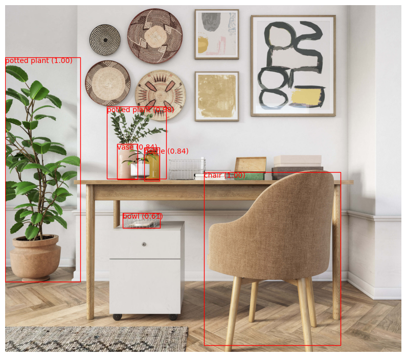

/home/nipun.batra/miniforge3/lib/python3.9/site-packages/torchvision/models/_utils.py:208: UserWarning: The parameter 'pretrained' is deprecated since 0.13 and may be removed in the future, please use 'weights' instead.
warnings.warn(
/home/nipun.batra/miniforge3/lib/python3.9/site-packages/torchvision/models/_utils.py:223: UserWarning: Arguments other than a weight enum or `None` for 'weights' are deprecated since 0.13 and may be removed in the future. The current behavior is equivalent to passing `weights=FasterRCNN_ResNet50_FPN_Weights.COCO_V1`. You can also use `weights=FasterRCNN_ResNet50_FPN_Weights.DEFAULT` to get the most up-to-date weights.
warnings.warn(msg)
threshold =0.5# Filter boxes based on confidence scoresfiltered_boxes = prediction[0]['boxes'][prediction[0]['scores'] > threshold]filtered_scores = prediction[0]['scores'][prediction[0]['scores'] > threshold]filtered_labels = prediction[0]['labels'][prediction[0]['scores'] > threshold]# Plot the image with bounding boxes and class namesfig, ax = plt.subplots(1, figsize=(10, 10))ax.imshow(img)# Add bounding boxes and labels to the plotfor i inrange(filtered_boxes.size(0)): box = filtered_boxes[i].cpu().numpy() score = filtered_scores[i].item() label = filtered_labels[i].item()# Create a Rectangle patch rect = patches.Rectangle((box[0], box[1]), box[2] - box[0], box[3] - box[1], linewidth=1, edgecolor='r', facecolor='none')# Add the patch to the Axes ax.add_patch(rect)# Add class name and score as text class_name = class_names[label] ax.text(box[0], box[1], f'{class_name} ({score:.2f})', color='r', verticalalignment='top')plt.axis('off') # Turn off axis labelsplt.show()

%pip install -q roboflow supervision
Note: you may need to restart the kernel to use updated packages.
# Place the model weightsimport ospth_path = os.path.expanduser('~/.cache/torch/sam.pth')pth_url ="https://dl.fbaipublicfiles.com/segment_anything/sam_vit_h_4b8939.pth"ifnot os.path.exists(pth_path):import urllib.requestprint(f'Downloading SAM weights to {pth_path}') urllib.request.urlretrieve(pth_url, pth_path)
# Blending the annotated image with the original imagealpha =0.5# Adjust the alpha value as neededblended_image = cv2.addWeighted(image_bgr, 1- alpha, annotated_image, alpha, 0)# Display the original image, annotated image, and the blended resultfig, ax = plt.subplots(1, 3, figsize=(18, 6))ax[0].imshow(img_tensor.squeeze(0).permute(1, 2, 0))ax[0].set_title('Original Image')ax[1].imshow(annotated_image)ax[1].set_title('Annotated Image')ax[2].imshow(blended_image)ax[2].set_title('Blended Result')for a in ax: a.axis('off')